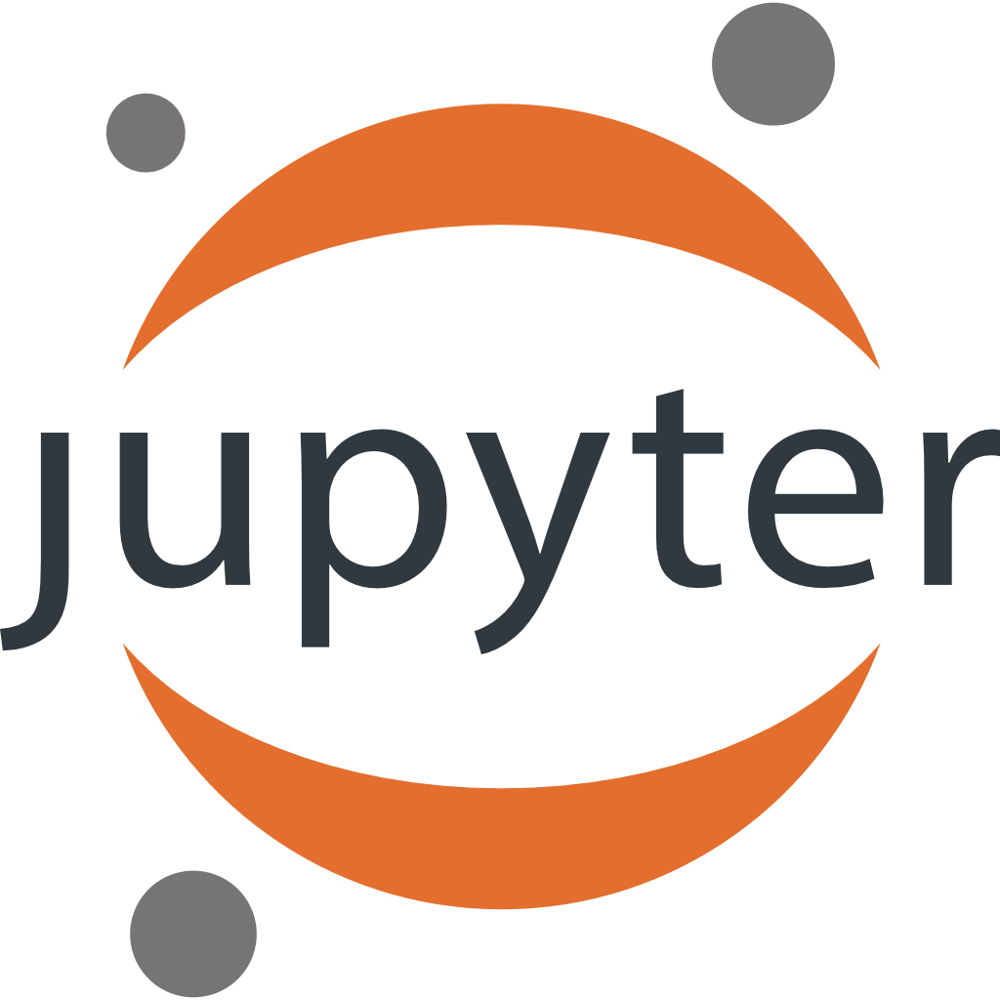
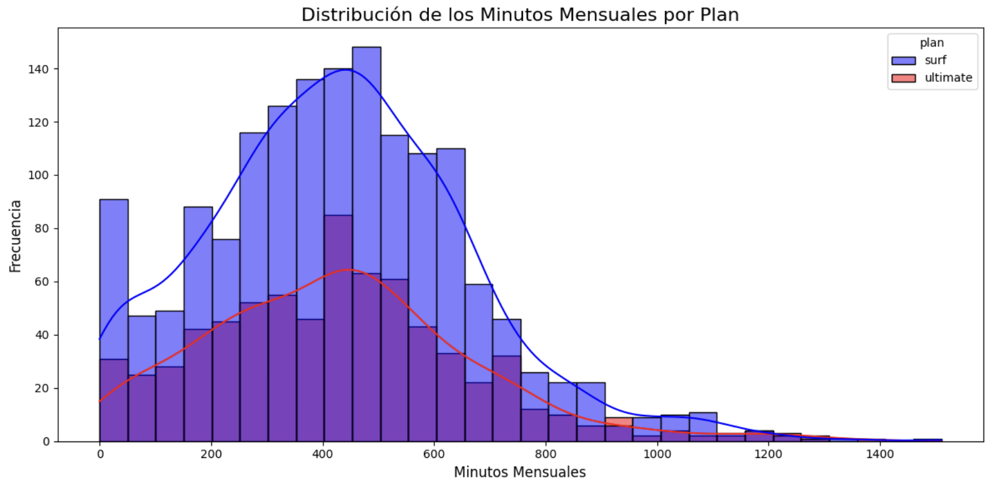
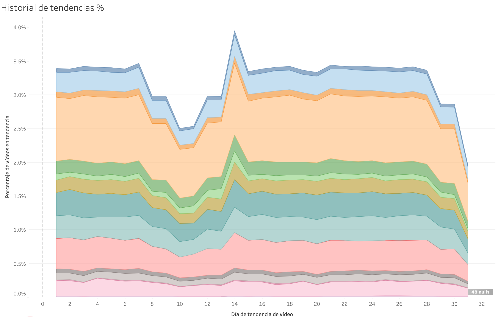

Highlights
Analista de Datos con una sólida base en pensamiento analítico, precisión técnica y visión de negocio. Experto en transformar conjuntos de datos complejos en insights claros y accionables que impulsan decisiones más inteligentes. Apasionado por la automatización, la visualización y el aprovechamiento de los datos para resolver problemas reales con eficiencia y creatividad.
- Python para análisis y automatización de datos, con dominio de librerías como Pandas, NumPy, Matplotlib y Seaborn para el procesamiento, análisis estadístico y visualización de información.
- SQL para extracción, transformación y análisis de datos, con experiencia en la creación de consultas, gestión de bases de datos y optimización de procesos para obtener información relevante y apoyar la toma de decisiones.
- Especialista en visualización de datos con Tableau, Power BI y Looker Studio, enfocado en transformar grandes volúmenes de información en paneles dinámicos y visuales que comunican resultados de forma efectiva y apoyan decisiones basadas en datos.
- Experiencia en análisis estadístico y pruebas de hipótesis aplicadas a datasets reales, con el objetivo de identificar patrones, validar suposiciones y respaldar decisiones estratégicas fundamentadas en evidencia.
- Experiencia en A/B testing y evaluación de experimentos, utilizando frameworks de priorización como ICE y RICE para medir el impacto de las iniciativas, optimizar resultados y orientar decisiones estratégicas basadas en evidencia.
- Experiencia en data cleaning y preprocesamiento de datos, asegurando la calidad, consistencia y confiabilidad de la información para generar análisis precisos e insights accionables que respalden decisiones estratégicas.
- Dominio de Excel avanzado y macros, aplicados a la automatización de procesos, elaboración de reportes interactivos y ejecución de cálculos dinámicos, optimizando tiempos y mejorando la eficiencia del análisis de datos.
- KPI design and performance tracking to measure growth and operational efficiency.
- Experiencia en el diseño de indicadores clave de desempeño (KPI) y en la monitorización de métricas operativas, orientada a evaluar el crecimiento, optimizar procesos y mejorar la eficiencia organizacional mediante el análisis de resultados y tendencias.
- Profesional en aprendizaje continuo, con interés en la integración de inteligencia artificial, el storytelling basado en datos y la analítica predictiva como herramientas para fortalecer la toma de decisiones estratégicas, anticipar tendencias y generar valor a partir de los datos.
Stack Tecnológico

Python

SQL

Tableau

Looker

Notion

Jupyter

Jupyter
Proyectos

Análisis basado en datos para maximizar los ingresos de Megaline Telecom

Análisis de tendencias de vídeos en YouTube

 LinkedIn
LinkedIn Email
Email GitHub
GitHub